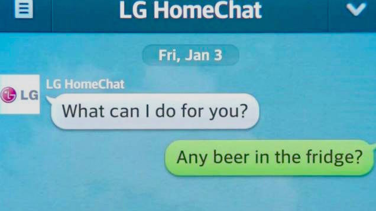

What is Obweb?
An estimated 2 billion of world's population will carry a camera in their pockets in 2016. Today's cameras can confidently scan unique 2D object codes and recognize faces. Tomorrow's cameras, empowered by advances in deep-learning algorithms, will confidently scan more general classes of objects. The Internet of Things vision—which promises a world of networked physical objects—already manifests in Amazon warehouses of code-tagged products, as well as household appliances that become "smarter" through Wi-Fi connection. Proponents of the Internet of Things dream expect these physical networks to increase automation and communication in almost every conceivable field.
With the Internet of Things gaining traction and accelerating improvements in computer vision, we imagine that the next important network will connect people and our immense world of physical objects.
Today's world wide web (www) is a sprawling, interactive network of webpages. We imagine the world wide obweb (wwow) as a network of objects where any item in your environment hyperlinks to information about itself or other objects. An object recognition browser allows navigation through entire inventories and collections of web things. In OBWEB, the camera in your pocket is the new mouse.
The near-future obweb will still rely heavily on the current web—web objects will link to web pages. Eventually, when all objects are computer-recognizable, we can use networks to form connections between things based on function as well as context. These smart collections can supplement our experience of object inventories with new creativity, organization, and decision making.
We currently live in a world where our casual interface to information is the smartphone app. Object recognition as an interface to information is an upcoming trend. For now, OBWEB is a 2015 fantasy trendcast speculating the potential of computer intelligence + objects + humans with pocket cameras.
Fridge Tracker
One of the first major steps towards networked inventories will break ground in the realm of food. Samsung and LG are already pushing for smart fridges that ping your smartphone— “Hang on, my fridge is texting me.”
These fridges run for around $3,000 apiece, have had relatively slow adoption—after all, how often do people swap out entire refrigerators?
In the "Internet of Things" stampede to come, the networked refrigerator will be one of the most important domestic appliance devices. A perishable and ubiquitous inventory like food lends itself to being timestamped and notification–friendly. The troublesome task of food management, which today's fridge can't fix yet, can be solved for in virtual space, where collections of unique objects can be searched and organized.
Connecting Objects & Existing Web
The fridge tracker talks to phone owners directly through their handheld device. Your apple, milk, and grapes might notify you when they approach their lifespan, and whatever is in your fridge hyperlinks to websites with its information: Wikipedia, for instance, shooting you a profile for Kumquats.
An egg's profile might be comprised of shelf–life, cooking methods, including Yahoo Answers forums on how to boil an egg perfectly. Established recipe sites will jump on board and deduce what ingredients you're missing for any given recipe. In this initial blend of OBWEB and OLDWEB, we've got something of a more clever Shazam for food.
Who will own this industry, ultimately?
It'll be a matter of who can best convince us that it's worthwhile and awesome to plant live stream cameras in our homes. So then, whoever gets the product right and markets it well. Fridge Tracker is one of the most likely entry points for popularizing OBWEB, as it solves for an existing problem with food object inventories. Maybe we will never feel okay being completely broadcast like a PandaCam, yet we already publish objects and food from our lives on networks like Instagram.

Perhaps our comfort level will later open to other types of inventory tracking, and if companies can offer us a tasty vision of a networked object household, we might eventually upload much of our material lives.
What does capitalism do with this info?
Even something as innocuous as food is high stakes information for marketing divisions and government agencies. We will have been granted a wealth of information about health and socioeconomic status, among other things. Marketing can easily discover “foodies,” and infer individual priorities around food and health. People who eat poorly may be at higher risk for certain health problems. Those who shop at Whole Foods or buy certain pricier kinds of wine attract befitting advertisements: “Inspired by Your Inventory.”
Inventories & Smart Collections
Material into virtual
With credit cards and Venmo, we turned material currency into virtual currency. The Fridge Tracker took a non-ideal material solution for a problem, and made it better by placing the problem in a virtual realm. As these ubiquitous consumer technologies becomes more and more natural in society, we will continue to move our material world inadequacies into the virtual world, where these inadequacies can be distributed, indexed, searched, and remixed at the tap of a screen.

Why now?
Social media integration of object recognition opened a new channel of ubiquitous data: data about objects we own, and which come to define us, whether in function or in fashion. As this channel of ubiquitous object information becomes integrated into daily life, many innovative computer-aided object-oriented solutions will crop up.
Parallel to this, a growing discontent with the hyper-capitalist structure created by some branches of the object-oriented social media causes many users to collect into small groups. Initially, these groups are rebellious: multiple users illegally banding under a single profile in order to pool together their product inventories, and thus, their clout. As these sparse group profiles naturally enter and exit the public eye, more and more groups begin to form. Some of these groups begin to use their collective inventories functionally. Aided by the breakthroughs in rapid goods transportation, many of these groups begin organizing trades or peer-to-peer markets.
Shared inventories
Smaller social networks are born out of this hacked usage of social media's attempt to elevate the status of products, catering to these groups against the will of the mega-brands. These smaller networks believe in this new form of commerce, even in the face of the time-tested capitalist mega-brands.
Many of these peer-to-peer markets offer goods at prices highly competitive to conventional markets. These competitive prices popularize a group; and with an increase in group population, the supply of the group increases. In many of these popular groups, there is a sense of fluid ownership, supported by the speed and ease with which transactions occur: the market is mainly understood not as a way of trading capital for goods, but as a way of managing a shared inventory.
Smart collections
The most popular networks for these shared inventories are those which can elegantly manage the enormous and complex collections of objects. Many overwhelmed users simply move to smaller networks, but lose out on the competitive prices and extensive supply of a larger network. The more competitive networks begin to roll out features for understanding, using, and accessing these objects; turning these gargantuan mixtures of unique items into smart collections.
By granting all users instantaneous access to information, the Internet changed the way we understand knowledge: Knowledge is no longer about what we have in our heads, but what we know how to access. By granting all users instantaneous access to objects and their functionalities, smart collections change the way we understand ability: With a connection to an expansive smart collection, a user becomes able to access and effectively use any item in the collection.
Who made this?
- Kevin Cadena ends ups being Kevin.
- David Lee ends ups being David.
- Kathy Wu ends ups being Kathy.
Social Media Integration
Use case (Part 1)
Jonathan is an 18 year old male who is currently going through freshman orientation at College. He goes to a party held by his Resident Advisor where everyone is getting to know each other. A little shy at first, he then meets Julie, another freshman and through sharing their interests and stories supplemented through Obweb. They end the night and decide to keep in touch. Jon pulls up the browser camera and focuses it on Anna's face. This pulls up all of her social media accounts from which Jon can then choose which to follow her on.
Why?
The story above will be continued but for now, Why this? We've all been part of the experience of “What's your (Enter social media account)?” where the person either gives their full name or just takes the phone and does it for you. Both experiences are sort of awkward as people sit in silence while waiting for the phone. Through this sort of integration the idea of Social Media connecting people can be achieved more fluidly.
How it could work
Well it would involve taking stuff the facial recognition work that Facebook is currently doing through their DeepFace Project and melding it with how Snapcode currently works on Snapchat. Not so much tying people to QR codes but the fact that Snapcode can be done in real time.
Facebook for life
Well let's say that Facebook gets their hands on this, what happens at that point? Well Facebook's objective is to keep you using their site as long as they can and part of how they do this is by having pages and information you could technically get anywhere but having it on their page as well. With Obweb, Facebook could become a contender outside of Social Media, having Object Recognition linking to a facebook page about whatever was scanned, as well as showing popular pages based off of it and linking to other sort of information.
Facebook for life.
Just as a recognized face can link to a person's Facebook profile, a recognized product can link to a brand's Facebook page. This feature is initially left in the hands of the mega-brands who can afford to each exhaustively define their own brand recognition algorithms, and is seen as a gimmick by most users. Eventually, Facebook gives in and begins to support single-product pages, on which brands can display individual products: a page for every Nike sneaker. With these single-product pages, defining object recognition becomes much more accessible, and these pages explode in usage across both brands and consumers. Many single-product pages of non-product objects are created as jokes by users: these joke pages have all the allure of Facebook groups, with an added exclusivity: You can only “own” the “Crushed Coke Can” product page and chat with all the other “owners” if you have crushed a can of Coke.
As we become more comfortable with the idea of allowing something like Facebook to have such power, it would eventually start to restructure how we interact with each other, just as the internet has done now. Imagine someone growing up in a world where they use an entity like Facebook on Obweb to interact and figure out about the world. Slowly certain information facebook gives when recognizing becomes more important than other info. What would be the top piece of information people would care about getting from objects through Facebook?
Likes.
Yes. Likes. Facebook with Obweb capabilities would take the idea of social capital to insane new heights. This sounds extremely contrived but think about how we currently interact with likes. We use them to show support of what we like and who we like, we get pleasure from receiving them, and we use them as insults when something doesn't have enough likes. What makes us feel good about it is that people are taking time out to press “Like.” Even more convuluted yes, but who hasn't felt good when 30-100 or more people like something they posted on a social media site.
Facebook likes are the closest way we currently have to feeling validated about what we believe in through quantifiable measures. As soon as we are able to attribute these sort of quantifiable measures to anything and everything in a way that requires little input and is more fluid (aka Object recognition as opposed to typing it out) Whose to say we won't? When paired with object recognition, Facebook leaves the virtual space for the material world where now not only what is said can be tied to these likes, but everything can, from the clothes you're wearing to the venues and spaces we exist in and through this, likes can become a symbol of status and power and this can become a sort of way for people to judge who and where they should be spending their time. To finish the story:
Use case (Part 2)
“Jon decides to meet up with Julie the next day. When they meet up, Jon decides he really likes the dress Julie is wearing and takes his phone out, focuses on the dress and then hits a like button on Facebook's Obweb to show how much he likes it. Julie is flattered by it and they decide to go to a local restaurant together. Walking by, they use Obweb to recognize the spaces near by simply by pointing the camera. Jon points at a certain restaurant and says “Oh! This place has 1000 likes!”. Julie responds with a scoff saying “Oh yeah well this other place has 3000. Let's go here and off they went.”
Final thoughts
It may sound arbitrary to us but an equivalent example would be trying to tell someone 10 years ago that you would be able to touch your phone's screen and take pictures of food, they'd probably laugh it off or ask why anyone would do that. But it's just how technology changes how we interact and at some point we know it's a little silly but when it creates conversations to talk about in person and helps keep up to date with your friends and the world at large, can you really blame anyone for doing it?
While the nature of this is extremely speculative and may never happen, the one thing I feel that rings true about this is that technology is becoming a larger and larger extension of ourselves by inversely, getting smaller and more powerful. To think that the effects it's had on us now is it would be to close out the world of possiblities.